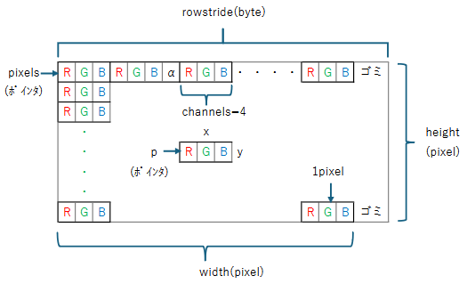
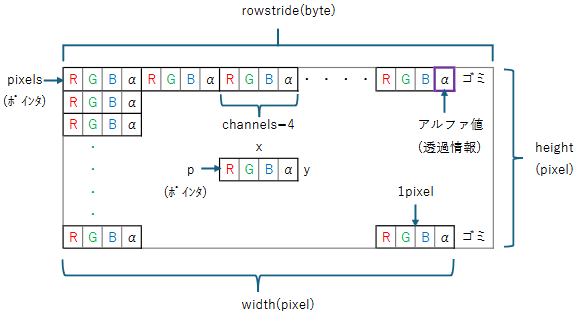

Gdk::pixbufにセットされている画像データに直接アクセスして画像を操作します。
Gdk::Pixbufのデータ構造は次の通りです。アルファ値を持たない場合はchannels=3となります。アルファ値を持つ場合はchannels=4となります。
| channels=3 | channels=4 |
|  |  |
| 返値 | 命令式 | 意味 |
| guint8* | Gdk::Pixbuf::get_pixels() | 画像データの領域の先頭のメモリアドレスを取得 |
| int | Gdk::Pixbuf::get_n_channels() | 画像データのチャンネル数(RGB:3,RGBA:4) |
| int | Gdk::Pixbuf::get_width() | 画像データの幅(pixel) |
| int | Gdk::Pixbuf::get_height() | 画像データの高さ(pixel) |
| int | Gdk::Pixbuf::get_rowstide() | 1行分のメモリサイズ |
座標(x,y)のメモリへは pixels[ y * get_rowstride() + x * get_n_channnels() ] でアクセスできます。
update:2024/11/8
#include <gtkmm.h>
#include <iostream>
class MyDrawArea : public Gtk::DrawingArea {
private:
Glib::RefPtr< Gdk::Pixbuf > m_pixbuf;
public:
MyDrawArea();
virtual ~MyDrawArea() = default;
protected:
virtual void on_draw( const Cairo::RefPtr<Cairo::Context>& cr, int width, int height );
};
MyDrawArea::MyDrawArea() {
set_draw_func( sigc::mem_fun( *this, &MyDrawArea::on_draw ));
// 画像読み込み
try {
m_pixbuf = Gdk::Pixbuf::create_from_file( "bridge.jpeg" );
}
catch(...)
{
Glib::exception_handlers_invoke();
exit(1);
}
}
void MyDrawArea::on_draw( const Cairo::RefPtr<Cairo::Context>& cr, int width, int height ) {
// 画像データの各種情報の取得
guint8* pixels = m_pixbuf->get_pixels();
int channels = m_pixbuf->get_n_channels();
int w = m_pixbuf->get_width();
int h = m_pixbuf->get_height();
int stride = m_pixbuf->get_rowstride();
std::cout << "channels:" << channels << std::endl;
std::cout << "width:" << w << std::endl;
std::cout << "height:" << h << std::endl;
std::cout << "stride:" << stride << std::endl;
// R・G・Bのpixelを排他的論理和をとって反転
for( int row = 0; row < h; row++ ) {
for( int col = 0; col < w; col++ ) {
int offset = row * stride + col * channels; // 座標(col, row)のメモリアドレスを取得
pixels[ offset ] ^= 0xff; // Red
pixels[ offset+1 ] ^= 0xff; // Green
pixels[ offset+2 ] ^= 0xff; // Blue
}
}
// 描画
// Gdk::Pixbuf::scale_simple()を使ってウィンドウに画像サイズを合わせる
Gdk::Cairo::set_source_pixbuf( cr, m_pixbuf->scale_simple( width, height, Gdk::InterpType::NEAREST ), 0, 0 );
cr->paint();
}
class MyWindow : public Gtk::Window
{
private:
MyDrawArea m_drawarea;
public:
MyWindow();
virtual ~MyWindow() = default;
};
MyWindow::MyWindow() {
set_title( "Direct memory access" );
set_default_size( 640, 320 );
set_child( m_drawarea );
}
int main(int argc, char* argv[])
{
auto app = Gtk::Application::create( "gtkmm4.example" );
return app->make_window_and_run<MyWindow>( argc, argv );
}